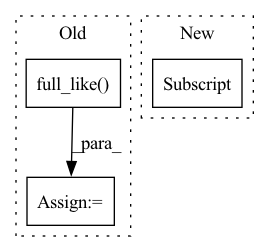

Pattern ID :29494
Before Change
deriv0 = (next_ys[0] - ys[0]) / (next_ts[0] - ts[0])
// t0 is of shape ("channels",), despite being timelike.
t0 = jnp.full_like( ys[0], fill_value=jnp.nan)
if replace_nans_at_start is None:
y0 = ys[0]
else:
y0 = jnp.broadcast_to(replace_nans_at_start, ys[0].shape)After Change
_hermite_forward, (t0, y0, deriv0), (ts[1:], ys[1:], next_ts[1:], next_ys[1:])
)
prev_ts = jnp.concatenate([t0[None], prev_ts])
prev_ys = jnp.concatenate([y0[None] , prev_ys])
prev_derivs = jnp.concatenate([deriv0[None], prev_derivs])
ds, cs, bs, as_ = jax.vmap(jax.vmap(_hermite_impl))(In pattern: SUPERPATTERN
Frequency: 3
Non-data size: 3
Instances Fragment ID: 87490727
Project Name: patrick-kidger/diffrax
Commit Name: 520f8a03fabece54c8b620b58f8226ee9af45088
Time: 2021-10-29
Author: 33688385+patrick-kidger@users.noreply.github.com
File Name: diffrax/global_interpolation.py
M Class Name: AnonimousClass
N Class Name: AnonimousClass
M Method Name: _backward_hermite_coefficients(5)
N Method Name: _backward_hermite_coefficients(5)
M Parent Class:
N Parent Class:
M File Name: diffrax/global_interpolation.py
N File Name: diffrax/global_interpolation.py
M Start Line: 373
M End Line: 394
N Start Line: 355
N End Line: 378
Before Change
cutoff_ = paddle.randint(low=1, high=ws.shape[1], shape=[1, ], dtype="int64")
cond = paddle.rand([1, ], dtype="float32") < self.style_mixing_prob
cutoff = paddle.where(cond, cutoff_, paddle.full_like( cutoff_, ws.shape[1]) )
cutoff.stop_gradient = True
// ws[:, cutoff:] = self.nets["mapping"](paddle.randn(z.shape), c, skip_w_avg_update=True)[:, cutoff:]
if cutoff == ws.shape[1]:After Change
ws = self.mapping(z, c)
self.style_mixing_prob = -1.0
if self.style_mixing_prob > 0:
cutoff = torch.empty([], dtype=torch.int64, device=ws.device).random_(1, ws.shape[1] )
cutoff = torch.where(torch.rand([], device=ws.device) < self.style_mixing_prob, cutoff, torch.full_like(cutoff, ws.shape[1]))
ws[:, cutoff:] = self.mapping(torch.randn_like(z), c, skip_w_avg_update=True)[:, cutoff:]
Fragment ID: 87490724
Project Name: miemie2013/miemiegan
Commit Name: 0ad2483396ab17c9512db493c01be594f47431b0
Time: 2022-02-23
Author: 53960695+miemie2013@users.noreply.github.com
File Name: mmgan/models/architectures/styleganv2ada_model.py
M Class Name: StyleGANv2ADAModel
N Class Name: StyleGANv2ADAModel
M Method Name: run_G(4)
N Method Name: run_G(4)
M Parent Class: torch.nn.Module
N Parent Class: torch.nn.Module
M File Name: mmgan/models/architectures/styleganv2ada_model.py
N File Name: mmgan/models/architectures/styleganv2ada_model.py
M Start Line: 127
M End Line: 147
N Start Line: 128
N End Line: 133
Before Change
swap_idx = self.uid2swap_idx[uid_list]
rev_swap_idx = self.uid2rev_swap_idx[uid_list]
swap_row = torch.cat([torch.full_like( swap, i) for i, swap in enumerate(swap_idx)])
swap_col_after = torch.cat(list(swap_idx))
swap_col_before = torch.cat(list(rev_swap_idx))
After Change
for idx, uid in enumerate(uid_list):
uid = uid.item()
positive_u += [idx for i in range(self.uid2items_num[uid])]
positive_i += list(self.uid2positive_item[uid] )
positive_u = torch.from_numpy(np.array(positive_u))
positive_i = torch.from_numpy(np.array(positive_i)) Fragment ID: 87490730
Project Name: rucaibox/recbole
Commit Name: a3596a230c1b34f77b50d21460d63996206cd55a
Time: 2021-07-15
Author: 2017202006@ruc.edu.cn
File Name: recbole/data/dataloader/general_dataloader.py
M Class Name: FullSortEvalDataLoader
N Class Name: FullSortEvalDataLoader
M Method Name: _next_batch_data(1)
N Method Name: _next_batch_data(1)
M Parent Class: AbstractDataLoader
N Parent Class: AbstractDataLoader
M File Name: recbole/data/dataloader/general_dataloader.py
N File Name: recbole/data/dataloader/general_dataloader.py
M Start Line: 225
M End Line: 256
N Start Line: 232
N End Line: 256